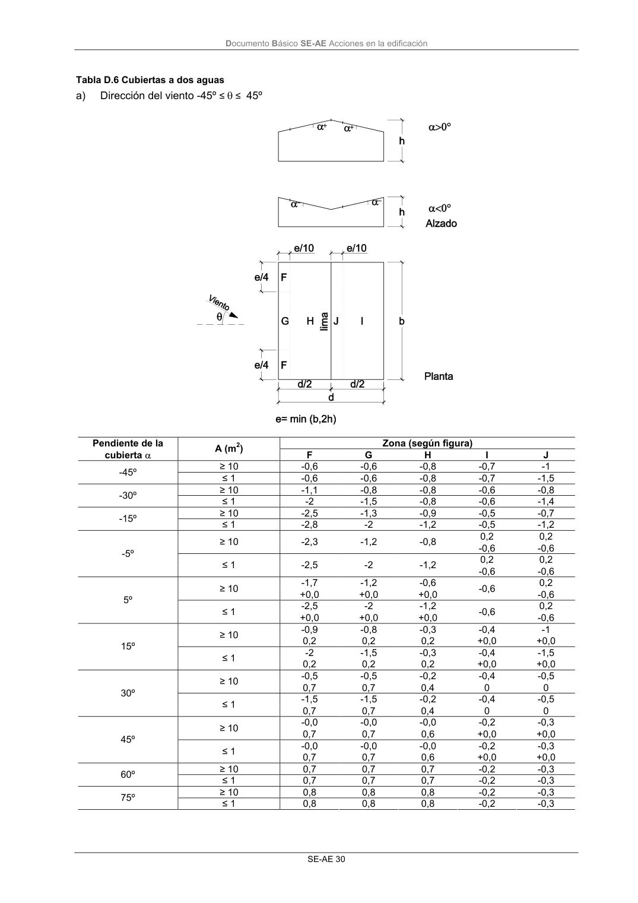

DB-SE-AE Acciones en la edificación · edición 2009-04 · capa oficial
Documento DB-SE-AE-oficial · SHA-256 del PDF 26116e5088955f0c6963a6187270cad282e1e7bf5a53a90f695c8fa50b4e4487
Página física 34 de 46.
Copia fiel del PDF fuente · Fuente oficial
Ficha de la disposición en la fuente oficial
Formato: Texto de la página (Markdown)
Documento Básico SE-AE Acciones en la edificación SE-AE 30 Tabla D.6 Cubiertas a dos aguas a) Dirección del viento -45º ≤ θ ≤ 45º Zona (según figura) Pendiente de la cubierta α A (m2) F G H I J ≥ 10 -0,6 -0,6 -0,8 -0,7 -1 -45º ≤ 1 -0,6 -0,6 -0,8 -0,7 -1,5 ≥ 10 -1,1 -0,8 -0,8 -0,6 -0,8 -30º ≤ 1 -2 -1,5 -0,8 -0,6 -1,4 ≥ 10 -2,5 -1,3 -0,9 -0,5 -0,7 -15º ≤ 1 -2,8 -2 -1,2 -0,5 -1,2 0,2 0,2 ≥ 10 -2,3 -1,2 -0,8 -0,6 -0,6 0,2 0,2 -5º ≤ 1 -2,5 -2 -1,2 -0,6 -0,6 -1,7 -1,2 -0,6 0,2 ≥ 10 +0,0 +0,0 +0,0 -0,6 -0,6 -2,5 -2 -1,2 0,2 5º ≤ 1 +0,0 +0,0 +0,0 -0,6 -0,6 -0,9 -0,8 -0,3 -0,4 -1 ≥ 10 0,2 0,2 0,2 +0,0 +0,0 -2 -1,5 -0,3 -0,4 -1,5 15º ≤ 1 0,2 0,2 0,2 +0,0 +0,0 -0,5 -0,5 -0,2 -0,4 -0,5 ≥ 10 0,7 0,7 0,4 0 0 -1,5 -1,5 -0,2 -0,4 -0,5 30º ≤ 1 0,7 0,7 0,4 0 0 -0,0 -0,0 -0,0 -0,2 -0,3 ≥ 10 0,7 0,7 0,6 +0,0 +0,0 -0,0 -0,0 -0,0 -0,2 -0,3 45º ≤ 1 0,7 0,7 0,6 +0,0 +0,0 ≥ 10 0,7 0,7 0,7 -0,2 -0,3 60º ≤ 1 0,7 0,7 0,7 -0,2 -0,3 ≥ 10 0,8 0,8 0,8 -0,2 -0,3 75º ≤ 1 0,8 0,8 0,8 -0,2 -0,3

Datos candidatos: compruebe celdas y notas en el PDF.